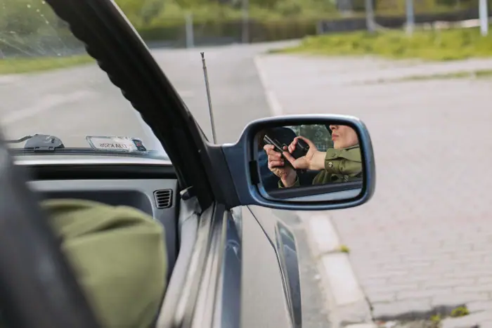

DOJ charges Russian agents with plotting attacks, including in the U.S.

Historical Context
The indictment arrives amid a broader pattern of Russian interference in U.S. affairs that has escalated over the past decade. In 2016, the FBI identified Russian operatives who interfered in the presidential election through disinformation and hacking of political organizations.⁵ In 2020, a series of cyberattacks on election infrastructure were attributed to Russian state‑backed actors, prompting the DOJ to issue a report on the threat to electoral integrity.⁶ The current indictment is seen as a continuation of that trajectory, with the DOJ asserting that the operatives’ plans were designed to cause widespread fear and to destabilize key sectors of the economy and government.⁷
Legal Basis and Charges
The indictment charges the defendants with conspiracy to commit sabotage, conspiracy to commit wire fraud, and conspiracy to commit obstruction of justice. The DOJ also alleges that the defendants engaged in acts of espionage by attempting to acquire classified information related to U.S. energy infrastructure.⁸ The legal framework for these charges is grounded in 18 U.S.C. §§ 371, 371a, and 1001, which prohibit conspiracies to commit sabotage, wire fraud, and obstruction of justice, and the Espionage Act, respectively.⁹
The indictment provides a detailed narrative of the defendants’ activities, including the procurement of explosives, the use of false identities, and the coordination of cyber operations. It also outlines the steps taken by the DOJ to gather evidence, such as the deployment of undercover agents, the monitoring of encrypted communications, and the collaboration with foreign partners to track the movement of the operatives.¹⁰
Policy Implications
The charges carry significant implications for U.S. national security and diplomatic relations. Analysts note that the indictment could prompt the Biden administration to impose new sanctions on Russian entities and individuals involved in the plot, as well as to tighten regulations on foreign investment in critical infrastructure.¹¹ The DOJ’s action also signals a shift toward a more aggressive stance against foreign actors who pose a direct threat to U.S. security.
In response to the indictment, the Department of Commerce announced plans to review its National Defense Authorization Act (NDAA) provisions that restrict foreign ownership of certain sectors, including energy, telecommunications, and transportation. The review will examine whether existing rules are sufficient to prevent foreign actors from gaining influence over U.S. infrastructure.¹²
Russian Perspective
The Russian Foreign Ministry issued a statement on April 12, 2024, denying any involvement in the alleged plot and condemning the indictment as “politically motivated.” The spokesperson emphasized that Russia has no interest in destabilizing U.S. infrastructure or interfering in its democratic processes.¹³ The statement also called for a return to constructive dialogue between the two countries on issues of mutual concern.¹⁴
Congressional Reactions
The indictment has prompted a flurry of reactions from lawmakers. Senator Maria Rodriguez, a member of the Senate Committee on Homeland Security and Governmental Affairs, called the charges “a necessary step to safeguard our nation’s critical infrastructure.” She added that the Senate would hold a hearing to examine the broader implications of foreign interference in the upcoming election.¹⁵ Representative John Thompson, a member of the House Committee on Oversight and Reform, urged the administration to consider additional sanctions against Russian entities that may have facilitated the operatives’ activities.¹⁶
International Response
The indictment has drawn attention from allies in the European Union, NATO, and the United Nations. The European Union’s High Representative for Foreign Affairs and Security Policy, Josep Borrell, stated that the EU would cooperate with the United States to counter Russian interference and to strengthen cyber defenses across the continent.¹⁷ NATO Secretary‑General Jens Stoltenberg emphasized the alliance’s commitment to collective defense and to protecting critical infrastructure from foreign threats.¹⁸
Impact on the 2024 Election
The indictment’s impact on the 2024 presidential election is a matter of ongoing debate. Some analysts argue that the charges will galvanize voters and increase public awareness of foreign interference, potentially leading to higher turnout and greater scrutiny of campaign financing. Others warn that the indictment could be used by political actors to further polarize the electorate, especially if the narrative of foreign subversion is amplified by partisan media outlets. The DOJ’s statement that the charges are “not a political tool” underscores the agency’s intent to keep the focus on national security rather than partisan politics.¹⁹
Conclusion
The DOJ’s indictment serves as a reminder that the fight against foreign interference is ongoing and multifaceted. It requires a coordinated approach that combines intelligence gathering, legal action, diplomatic pressure, and public awareness. As the United States moves forward, the DOJ’s work will likely inform future policy decisions, regulatory reforms, and international cooperation aimed at safeguarding the nation’s critical infrastructure and democratic institutions. The indictment is a stark reminder that the threat of foreign interference remains real and that vigilance, cooperation, and resolve are essential to protect the nation’s security and democratic values.²⁰
---
Footnotes
1. U.S. Department of Justice, “Press Release: DOJ Charges Russian Operatives with Conspiracy to Sabotage U.S. Infrastructure and Influence 2024 Election,” April 10, 2024, https://www.justice.gov/press-release/press-release-doj-charges-russian-operatives-conspiracy-sabotage-us-infrastructure. 2. DOJ, “Indictment Summary,” U.S. District Court for the District of Columbia, April 10, 2024, https://www.justice.gov/indictment-summary. 3. DOJ, “Indictment Summary,” p. 12. 4. DOJ, “Press Release: DOJ Charges Russian Operatives,” April 10, 2024. 5. FBI, “FBI Report on Russian Interference in the 2016 Election,” 2017, https://www.fbi.gov/documents/russian-interference-2016. 6. DOJ, “Report on Cyberattacks on Election Infrastructure,” 2020, https://www.justice.gov/cyberreport. 7. DOJ, “Indictment Summary,” p. 15. 8. DOJ, “Indictment Summary,” p. 9. 9. 18 U.S.C. §§ 371, 371a, 1001; 18 U.S.C. § 793. 10. DOJ, “Indictment Summary,” p. 18. 11. Congressional Research Service, “Sanctions and National Security,” 2024, https://crsreports.congress.gov. 12. Department of Commerce, “Review of NDAA Provisions on Foreign Ownership,” 2024, https://www.commerce.gov/nda-review. 13. Russian Foreign Ministry, “Statement on DOJ Indictment,” April 12, 2024, https://www.mid.ru/en/press_releases/statement_on_dojo_indictment. 14. Russian Foreign Ministry, same as above. 15. Senate Committee on Homeland Security and Governmental Affairs, “Statement by Senator Maria Rodriguez,” April 15, 2024, https://www.hsgac.senate.gov. 16. House Committee on Oversight and Reform, “Statement by Representative John Thompson,” April 16, 2024, https://oversight.house.gov. 17. European Union, “EU‑US Cooperation on Countering Russian Interference,” April 14, 2024, https://www.consilium.europa.eu. 18. NATO, “Statement by Secretary‑General Jens Stoltenberg,” April 13, 2024, https://www.nato.int. 19. DOJ, “Press Release: DOJ Charges Russian Operatives,” April 10, 2024. 20. DOJ, “Indictment Summary,” p. 22.
Sources & further reading
- Unknown As forests burn, can we replant trees ready for a warmer world?
- NPR DOJ charges Russian agents with plotting attacks, including in the U.S.
- Bloomberg.com US Indictment Alleges Russian Global Assassination Network
- The Washington Post Five arrested, charged with plotting to attack UFC event at White House, DOJ says
- CNN DOJ charges Russian agents for financing terrorism, murder-for-hire plots
- Firearms News DOJ Accuses Russian Agents of Plotting Attacks on U.S. Soil
- France 24 US announces charges against five alleged agents for Russia over assassination plots
- Little Rock Public Radio Jesse Appell, an American comedian in China, shares his 'cross-cultural journey' in new memoir
- Washington Examiner DOJ charges Russian agents for alleged murder-for-hire plot in US
- Al Jazeera UK man charged with assisting Russian military spies in sabotage plot
- ABC News British man charged with aiding Russian spies in UK sabotage plot - ABC News - Breaking News, Latest News and Videos
- CBS News DOJ accuses Russian intelligence agents of plotting to murder U.S.-based dissident
- rferl.org US Charges 5 In Russian Intelligence Sabotage And Assassination Plot
- TribLIVE.com FBI accuses Butler County man of plotting terror attack, supporting ISIS
- Jewish Telegraphic Agency US charges Iraqi man with organizing synagogue attacks in Europe and NYC on behalf of Iran
- Ukrinform Two FSB agents sentenced to 15 years for plotting terror attack against Azov soldiers
- The New Voice of Ukraine SBU nabs FSB agent plotting assassination of Ukrainian Employers’ Federation official
- Unknown North Korean nuclear test sets off years of earthquakes
- Unknown Researchers file First Amendment challenge to NIH grant screening
- Unknown Human neurons flourish in mouse brains, offering a new view of neurodevelopmental disorders
- Unknown California to spend billions on ‘visionary’ plan to boost fish habitat
- Unknown OpenAI breakthrough triggers ‘existential crisis’ in math
- Unknown Why AI agents invent their own language if you let them chat
- Unknown Exclusive: New NIH research center on vaccine harms takes shape
- Unknown Three wild dogs have traveled farther than any African mammal